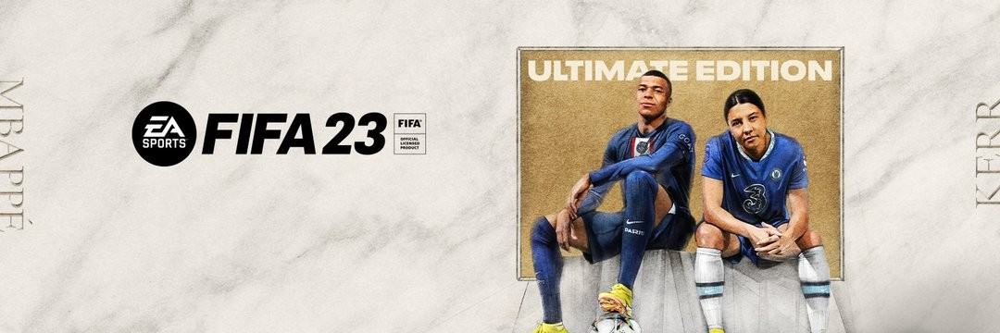

Jogos Esportivos
Os jogos de esportes têm uma longa história e são um dos gêneros mais populares na indústria de jogos. Eles recriam esportes tradicionais, como futebol, basquete, futebol americano, beisebol, entre outros, proporcionando aos jogadores a oportunidade de participar de competições virtuais. Aqui está uma visão geral da história, competitividade e alguns dados sobre jogos de esportes.
História:
Os jogos de esportes tiveram início na década de 1970, com títulos simples, como "Pong" e "Tennis". Esses
jogos
foram seguidos por lançamentos mais complexos, como "Tecmo Bowl" e "NBA Jam" nos anos 1980 e 1990. No
entanto,
foi com a evolução da tecnologia e dos consoles que os jogos de esportes realmente ganharam destaque.
Com o advento dos consoles mais avançados, como o PlayStation e o Xbox, os jogos de esportes se tornaram
mais
realistas e detalhados. Eles passaram a incluir gráficos aprimorados, controles mais precisos e a
simulação
de
estratégias e táticas dos esportes reais. A série "FIFA" da EA Sports, por exemplo, foi lançada pela
primeira
vez em 1993 e se tornou um marco para os jogos de futebol.
Competitividade:
Os jogos de esportes têm uma forte presença competitiva tanto em torneios presenciais quanto online. Muitos jogadores se dedicam a aprimorar suas habilidades em esportes virtuais específicos, participando de competições, ligas e campeonatos. A série "FIFA" é um exemplo de um jogo de esportes com uma cena competitiva estabelecida. A EA Sports realiza eventos oficiais, como a "FIFA eWorld Cup", onde os melhores jogadores competem por prêmios em dinheiro e o título de campeão mundial.
Além disso, outros jogos de esportes, como "NBA 2K" para basquete, "Madden NFL" para futebol americano e "Rocket League" para futebol veicular, também têm comunidades competitivas ativas e torneios organizados.

Dados de jogos de esportes:
Os jogos de esportes são extremamente populares e têm uma base de fãs global. Aqui estão alguns dados interessantes sobre jogos de esportes:
FIFA
A série "FIFA" da EA Sports é uma das mais vendidas no gênero de jogos de esportes. O jogo vendeu mais de 325 milhões de cópias desde o seu lançamento em 1993.
Rocket League
Um jogo de futebol veicular lançado em 2015, alcançou mais de 75 milhões de jogadores em 2020. O jogo combina carros e futebol em uma mistura única e emocionante.
NBA 2K21
Lançado em 2020, é um dos jogos de esportes mais populares no gênero de basquete. Ele vendeu mais de 8 milhões de cópias em seu primeiro mês de lançamento.
Os jogos de esportes também são conhecidos por suas versões anuais, que trazem atualizações de elenco,
estatísticas e melhorias de jogabilidade. Isso permite que os jogadores se mantenham atualizados com as
mudanças
nas equipes e nas ligas.
Além dos consoles, os jogos de esportes também têm uma presença significativa em dispositivos móveis,
com
versões adaptadas para smartphones e tablets.
Esses são apenas alguns dados gerais sobre a história, competitividade e informações sobre jogos de
esportes. O
gênero continua a atrair jogadores de todo o mundo, proporcionando uma experiência imersiva e
emocionante
para
aqueles que desejam participar de competições virtuais nos esportes que amam.